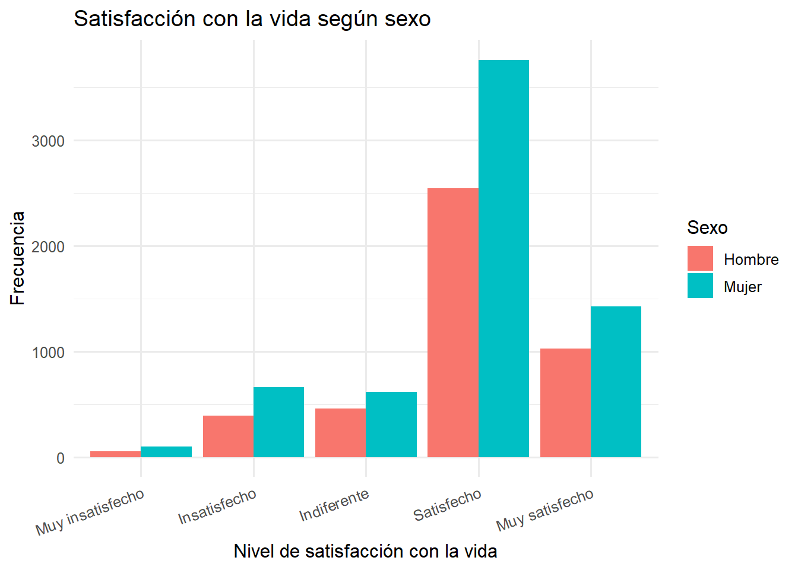
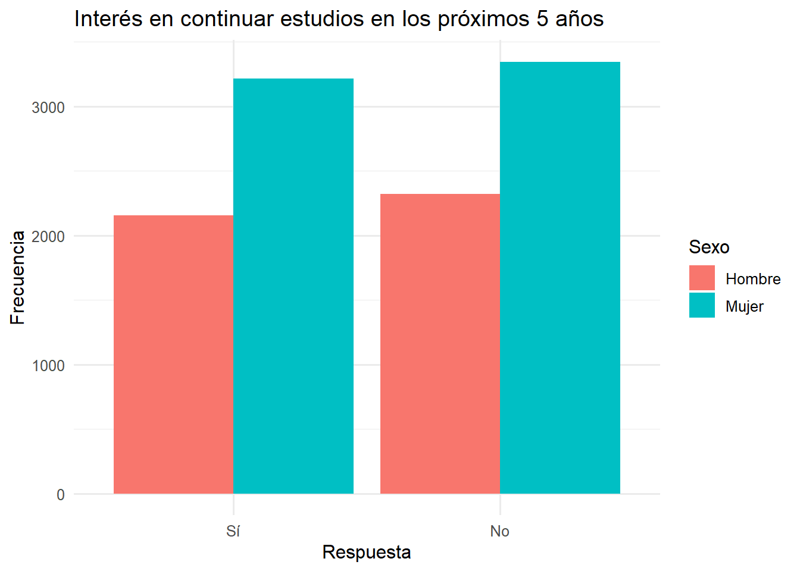
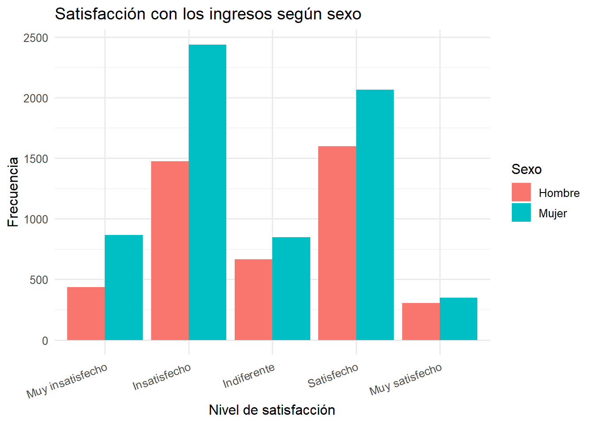
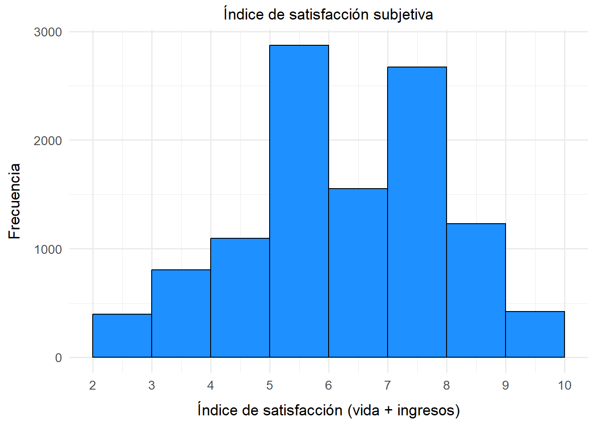
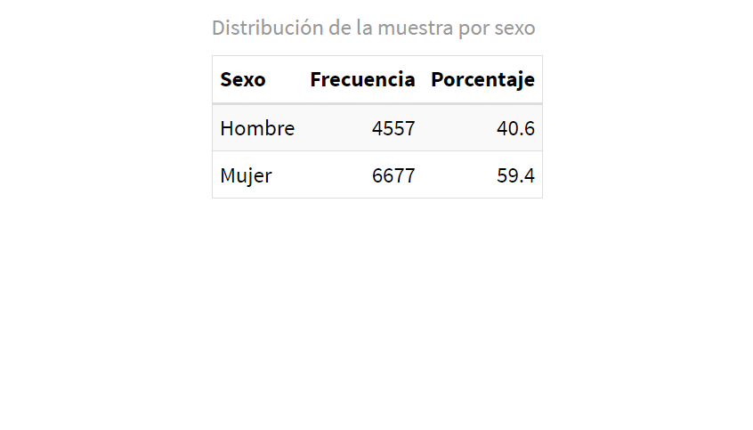
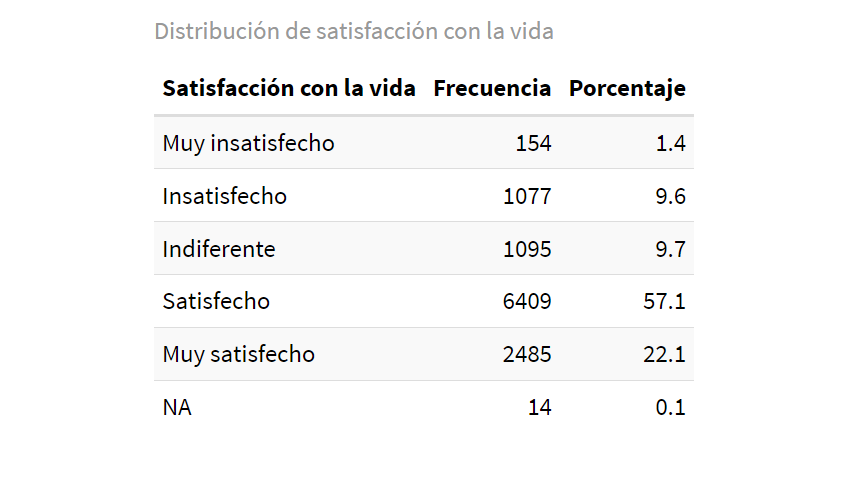
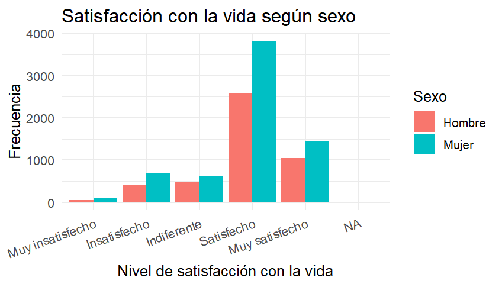
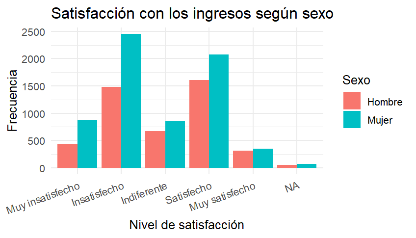
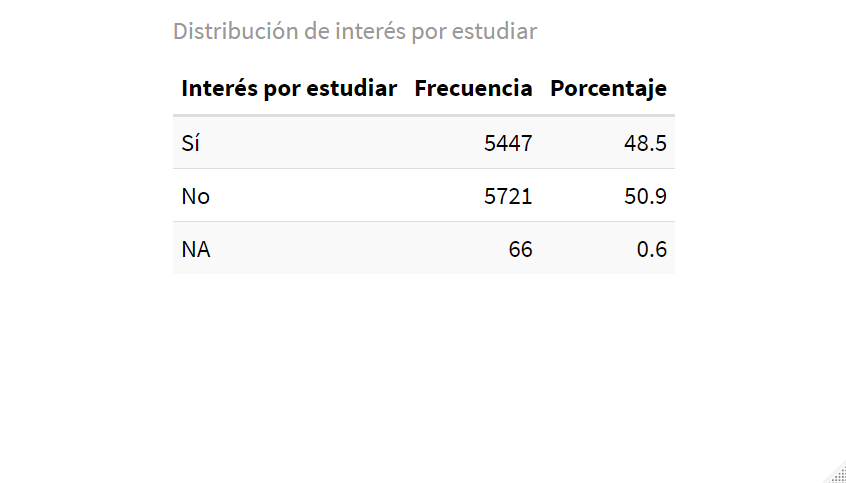

Género y bienestar subjetivo en Chile: un análisis exploratorio sobre satisfacción vital, percepción económica y aspiraciones educativas
Introducción
En las últimas décadas, el concepto de bienestar ha dejado de limitarse a dimensiones objetivas como los ingresos o el acceso a servicios, y ha incorporado cada vez más aspectos subjetivos que permiten comprender cómo las personas evalúan su calidad de vida. En ese marco, la noción de bienestar subjetivo ha ganado relevancia como una herramienta para diagnosticar desigualdades no solo materiales, sino también simbólicas, emocionales y proyectivas. Este trabajo se sitúa en esa línea y busca explorar cómo el bienestar subjetivo se expresa de manera diferenciada entre hombres y mujeres en Chile, utilizando como fuente de datos la Encuesta de Bienestar Social 2023.
La relevancia del problema no radica únicamente en el reconocimiento de las desigualdades estructurales de género en Chile, sino en el aporte específico que una mirada sociológica puede hacer al conectar dichas desigualdades con las formas en que las personas experimentan su realidad cotidiana. Desde esta disciplina, el género se entiende no como una categoría estática, sino como una construcción social que organiza la distribución de recursos, el acceso al poder y la subjetividad misma. Así, estudiar las diferencias de género en la satisfacción con la vida, la percepción de ingresos y las aspiraciones educativas permite observar cómo las estructuras de dominación se inscriben en la vida emocional, económica y simbólica de las personas.
Diversos estudios han señalado que, aunque las mujeres suelen tener peores indicadores objetivos de salud y economía, tienden a reportar niveles más altos de satisfacción subjetiva en ciertos dominios, especialmente en etapas más avanzadas del ciclo vital (Gallardo-Peralta et al. 2018). Esta aparente paradoja evidencia que el bienestar no puede entenderse solo en función de lo material, sino también desde las relaciones, expectativas y significados que las personas otorgan a su experiencia.
Asimismo, las brechas salariales siguen siendo una expresión concreta de la desigualdad estructural de género. A pesar de los avances normativos, persiste una marcada desigualdad en los ingresos percibidos por hombres y mujeres por trabajos equivalentes, lo cual incide directamente en su percepción de suficiencia económica y bienestar (Rivero Evia 2024).
En cuanto a las aspiraciones educativas, investigaciones sobre mujeres en carreras tradicionalmente masculinizadas, como la ingeniería, han mostrado que las motivaciones para continuar estudiando suelen vincularse con la necesidad de superar barreras estructurales y culturales, así como con la búsqueda de movilidad social y autonomía personal (Jiménez, Jones, and Vidal 2019) Este tipo de interés proyectivo puede ser interpretado como una forma de agencia frente a contextos marcados por la desigualdad de oportunidades.
El concepto central que se abordará es bienestar subjetivo, entendido como el conjunto de percepciones que una persona tiene respecto a su situación vital, emocional y económica, incluyendo su satisfacción con la vida, su percepción de suficiencia material y su proyección en términos de formación futura. Este enfoque integra tanto dimensiones cognitivas como afectivas, permitiendo una lectura compleja de las desigualdades sociales.
El presente estudio se orienta por la siguiente hipótesis central:
Las mujeres presentan menores niveles de satisfacción con la vida e ingresos, pero mayor interés por continuar estudios, en comparación con los hombres.
Esta hipótesis se articula con una perspectiva que entiende las diferencias de género no como atributos individuales, sino como efectos de procesos estructurales. El interés por seguir estudiando, por ejemplo, puede interpretarse como una forma de agencia frente a contextos marcados por la desigualdad. Asimismo, la menor satisfacción con los ingresos puede reflejar no solo ingresos más bajos, sino también una experiencia más aguda de precariedad, expectativas frustradas o doble carga laboral.
Metodología y selección de variables
Diseño del estudio
Este estudio adopta un enfoque cuantitativo de tipo exploratorio, con un diseño transversal basado en el análisis secundario de datos provenientes de la Encuesta de Bienestar Social 2023, desarrollada por el Estado de Chile. La unidad de análisis corresponde a personas mayores de 18 años encuestadas en el instrumento, en tanto sujetos capaces de expresar percepciones sobre su bienestar y sus expectativas educativas.
El objetivo no es establecer relaciones causales, sino identificar patrones de diferenciación por sexo en variables asociadas al bienestar subjetivo. Se utiliza el software RStudio para el procesamiento, recodificación y análisis de los datos.
Variables seleccionadas
Variable independiente principal:
Sexo (sg01) –> Categorica nominal
Categorías: 1 = Hombre; 2 = Mujer
Dicha variable permite segmentar la muestra para comparar los niveles de bienestar subjetivo y proyección educativa.
Variables dependientes:
Satisfacción con la vida (a1)
Tipo: ordinal
Categorías: 1 = Muy insatisfecho(a), 2 = Insatisfecho(a), 3 = Indiferente, 4 = Satisfecho(a), 5 = Muy satisfecho(a)
Representa la percepción global que las personas tienen sobre su calidad de vida.
Satisfacción con los ingresos (a7)
Tipo: ordinal
Categorías: 1 = Muy insatisfecho(a), 2 = Insatisfecho(a), 3 = Indiferente, 4 = Satisfecho(a), 5 = Muy satisfecho(a)
Esta variable se asocia a la percepción de suficiencia económica, más allá del ingreso real.
Interés por continuar estudios (ee2)
Tipo: categórica dicotómica
Categorías: 1 = Sí, 2 = No
Mide el deseo expresado por los encuestados de continuar su formación en los próximos cinco años, lo cual se interpreta como una forma de agencia proyectiva y búsqueda de movilidad.
Procesamiento de datos
##Instalamos y cargamos los paquetes necesarios
library(ggcorrplot)
Warning: package 'ggcorrplot' was built under R version 4.4.3
Cargando paquete requerido: ggplot2
library(forcats)
Warning: package 'forcats' was built under R version 4.4.3
library(dplyr)
Adjuntando el paquete: 'dplyr'
The following objects are masked from 'package:stats':
filter, lag
The following objects are masked from 'package:base':
intersect, setdiff, setequal, union
library(haven) library(knitr)
Warning: package 'knitr' was built under R version 4.4.3
library(kableExtra)
Warning: package 'kableExtra' was built under R version 4.4.3
Adjuntando el paquete: 'kableExtra'
The following object is masked from 'package:dplyr':
group_rows
Warning: package 'corrplot' was built under R version 4.4.3
corrplot 0.95 loaded
pacman::p_load(haven,tidyverse,sjlabelled, dplyr, stargazer,sjmisc,summarytools,kableExtra,sjPlot,corrplot,ggplot2)##Cargamos y renombramos la base de datos load("C:/Users/Sebastián Fernández/OneDrive/Desktop/OPT R, TRABAJOS/ejercicios-practicos-RADSF/Trabajo1OPTRJYS/Base de datos EBS 2023.RData") data <- EBS_2023_vp ##Visualizamos la base de datosView(data)
##Filtramos la base de datos con las variables que utilizaremos
data_filtrada <- data %>%select(sg01, a1, a7, ee2) View(data_filtrada)
##Pasamos las variables a numericas para posteriormente recodificarlas
tibble [11,039 × 12] (S3: tbl_df/tbl/data.frame)
$ sg01 : dbl+lbl [1:11039] 2, 2, 2, 2, 2, 1, 2, 2, 2, 1, 2, 2, 2, 2, 2, 2, 2, 2...
..@ label : chr "sg01. ¿Cuál es su sexo?"
..@ format.spss : chr "F1.0"
..@ display_width: int 6
..@ labels : Named num [1:2] 1 2
.. ..- attr(*, "names")= chr [1:2] "1. Hombre" "2. Mujer"
$ a1 : dbl+lbl [1:11039] 5, 4, 4, 5, 4, 3, 4, 3, 2, 4, 4, 5, 4, 4, 4, 3, 3, 4...
..@ label : chr "a1. ¿Qué tan satisfecho(a) o insatisfecho(a) se encuentra con su vida?"
..@ format.spss : chr "F3.0"
..@ display_width: int 5
..@ labels : Named num [1:7] -99 -88 1 2 3 4 5
.. ..- attr(*, "names")= chr [1:7] "No responde" "No sabe" "1. Totalmente insatisfecho(a)" "2. Insatisfecho(a)" ...
$ a7 : dbl+lbl [1:11039] 4, 4, 2, 2, 3, 2, 2, 4, 1, 2, 1, 5, 2, 5, 2, 2, 1, 3...
..@ label : chr "a7. ¿Cuán satisfecho(a) o insatisfecho(a) está usted con sus ingresos?"
..@ format.spss : chr "F3.0"
..@ display_width: int 5
..@ labels : Named num [1:7] -99 -88 1 2 3 4 5
.. ..- attr(*, "names")= chr [1:7] "No responde" "No sabe" "1. Totalmente insatisfecho(a)" "2. Insatisfecho(a)" ...
$ ee2 : dbl+lbl [1:11039] 1, 2, 1, 1, 1, 1, 1, 1, 2, 2, 2, 2, 2, 1, 2, 2, 2, 1...
..@ label : chr "ee2. ¿Tiene Ud. interés en estudiar o seguir estudiando en los próximos 5 años?"
..@ format.spss : chr "F3.0"
..@ display_width: int 5
..@ labels : Named num [1:4] -99 -88 1 2
.. ..- attr(*, "names")= chr [1:4] "No responde" "No sabe" "1. Sí" "2. No"
$ sg01_num : dbl+lbl [1:11039] 2, 2, 2, 2, 2, 1, 2, 2, 2, 1, 2, 2, 2, 2, 2, 2, 2, 2...
..@ label : chr "sg01. ¿Cuál es su sexo?"
..@ format.spss : chr "F1.0"
..@ display_width: int 6
..@ labels : Named num [1:2] 1 2
.. ..- attr(*, "names")= chr [1:2] "1. Hombre" "2. Mujer"
$ a1_num : dbl+lbl [1:11039] 5, 4, 4, 5, 4, 3, 4, 3, 2, 4, 4, 5, 4, 4, 4, 3, 3, 4...
..@ label : chr "a1. ¿Qué tan satisfecho(a) o insatisfecho(a) se encuentra con su vida?"
..@ format.spss : chr "F3.0"
..@ display_width: int 5
..@ labels : Named num [1:7] -99 -88 1 2 3 4 5
.. ..- attr(*, "names")= chr [1:7] "No responde" "No sabe" "1. Totalmente insatisfecho(a)" "2. Insatisfecho(a)" ...
$ a7_num : dbl+lbl [1:11039] 4, 4, 2, 2, 3, 2, 2, 4, 1, 2, 1, 5, 2, 5, 2, 2, 1, 3...
..@ label : chr "a7. ¿Cuán satisfecho(a) o insatisfecho(a) está usted con sus ingresos?"
..@ format.spss : chr "F3.0"
..@ display_width: int 5
..@ labels : Named num [1:7] -99 -88 1 2 3 4 5
.. ..- attr(*, "names")= chr [1:7] "No responde" "No sabe" "1. Totalmente insatisfecho(a)" "2. Insatisfecho(a)" ...
$ ee2_num : dbl+lbl [1:11039] 1, 2, 1, 1, 1, 1, 1, 1, 2, 2, 2, 2, 2, 1, 2, 2, 2, 1...
..@ label : chr "ee2. ¿Tiene Ud. interés en estudiar o seguir estudiando en los próximos 5 años?"
..@ format.spss : chr "F3.0"
..@ display_width: int 5
..@ labels : Named num [1:4] -99 -88 1 2
.. ..- attr(*, "names")= chr [1:4] "No responde" "No sabe" "1. Sí" "2. No"
$ sexo : Factor w/ 2 levels "Hombre","Mujer": 2 2 2 2 2 1 2 2 2 1 ...
$ satisfaccion_vida : Factor w/ 5 levels "Muy insatisfecho",..: 5 4 4 5 4 3 4 3 2 4 ...
$ satisfaccion_ingresos: Factor w/ 5 levels "Muy insatisfecho",..: 4 4 2 2 3 2 2 4 1 2 ...
$ interes_estudios : Factor w/ 2 levels "Sí","No": 1 2 1 1 1 1 1 1 2 2 ...
##Creamos la tabla 1 –> sexo
##Tabla 1 sexotabla_sexo <- data_filtrada %>%count(sexo) %>%mutate(Porcentaje =round(n /sum(n) *100, 1)) %>%rename(Sexo = sexo, Frecuencia = n) kable(tabla_sexo, format ="html", caption ="Distribución de la muestra por sexo") %>%kable_styling(bootstrap_options =c("striped", "hover", "condensed", "responsive"), full_width = F, position ="center")
Distribución de la muestra por sexo
Sexo
Frecuencia
Porcentaje
Hombre
4477
40.6
Mujer
6562
59.4
##Creamos la tabla 2 –> Satisfacción con la vida
tabla_vida <- data_filtrada %>%count(satisfaccion_vida) %>%mutate(Porcentaje =round(n /sum(n) *100, 1)) %>%rename(`Satisfacción con la vida`= satisfaccion_vida, Frecuencia = n) kable(tabla_vida, format ="html", caption ="Distribución de satisfacción con la vida") %>%kable_styling(bootstrap_options =c("striped", "hover", "condensed"), full_width = F, position ="center")
Distribución de satisfacción con la vida
Satisfacción con la vida
Frecuencia
Porcentaje
Muy insatisfecho
151
1.4
Insatisfecho
1056
9.6
Indiferente
1078
9.8
Satisfecho
6304
57.1
Muy satisfecho
2450
22.2
##Creamos la tabla 3 –> Satisfacción con el ingreso
#Tabla 3 Satisfacción con el ingresotabla_ingresos <- data_filtrada %>%count(satisfaccion_ingresos) %>%mutate(Porcentaje =round(n /sum(n) *100, 1)) %>%rename(`Satisfacción con los ingresos`= satisfaccion_ingresos, Frecuencia = n) kable(tabla_ingresos, format ="html", caption ="Distribución de satisfacción con los ingresos") %>%kable_styling(bootstrap_options =c("striped", "hover", "condensed"), full_width = F, position ="center")
Distribución de satisfacción con los ingresos
Satisfacción con los ingresos
Frecuencia
Porcentaje
Muy insatisfecho
1301
11.8
Insatisfecho
3912
35.4
Indiferente
1511
13.7
Satisfecho
3663
33.2
Muy satisfecho
652
5.9
##Creamos la tabla 4 –> Interes por seguir estudiando
tabla_estudios <- data_filtrada %>%count(interes_estudios) %>%mutate(Porcentaje =round(n /sum(n) *100, 1)) %>%rename(`Interés por estudiar`= interes_estudios, Frecuencia = n) kable(tabla_estudios, format ="html", caption ="Distribución de interés por estudiar") %>%kable_styling(bootstrap_options =c("striped", "hover", "condensed"), full_width = F, position ="center")
Distribución de interés por estudiar
Interés por estudiar
Frecuencia
Porcentaje
Sí
5373
48.7
No
5666
51.3
##Graficamos la variable satis_vida por sexo
ggplot(data_filtrada, aes(x = satisfaccion_vida, fill = sexo)) +geom_bar(position ="dodge") +labs(title ="Satisfacción con la vida según sexo",x ="Nivel de satisfacción con la vida",y ="Frecuencia",fill ="Sexo") +theme_minimal(base_size =12) +theme(axis.text.x =element_text(angle =20, hjust =1))

##Graficamos la variable interes por seguir estudiando por sexo
ggplot(data_filtrada, aes(x = interes_estudios, fill = sexo)) +geom_bar(position ="dodge") +labs(title ="Interés en continuar estudios en los próximos 5 años",x ="Respuesta",y ="Frecuencia",fill ="Sexo") +theme_minimal(base_size =12) +theme(axis.text.x =element_text(angle =0, hjust =0.5))

##Graficamos la variable satis_ingreso por sexo
ggplot(data_filtrada, aes(x = satisfaccion_ingresos, fill = sexo)) +geom_bar(position ="dodge") +labs(title ="Satisfacción con los ingresos según sexo",x ="Nivel de satisfacción",y ="Frecuencia",fill ="Sexo") +theme_minimal(base_size =12) +theme(axis.text.x =element_text(angle =20, hjust =1))

##Analisis de correlación entre variables de satisfacción
###Seleccionamos las variables para la correlación
Min. 1st Qu. Median Mean 3rd Qu. Max.
2.000 6.000 7.000 6.752 8.000 10.000
##Graficamos
ggplot(data_filtrada, aes(x = indice_satisfaccion)) +geom_histogram(binwidth =1, fill ="dodgerblue", color ="black", boundary =0) +scale_x_continuous(breaks =seq(2, 10, by =1)) +labs(title ="Índice de satisfacción subjetiva",x ="Índice de satisfacción (vida + ingresos)",y ="Frecuencia" ) +theme_minimal(base_size =13) +theme(plot.title =element_text(hjust =0.5, size =13), axis.title.x =element_text(margin =margin(t =10)),axis.title.y =element_text(margin =margin(r =10)) )

Resultados
Tabla 1 —> Distribución de la muestra por sexo

La muestra está compuesta por un 59,4% de mujeres y un 40,6% de hombres. Esta sobrerrepresentación femenina puede influir en los resultados generales de percepción de bienestar y aspiraciones educativas.
Tabla y gráfico de satisfacción con la vida según sexo


La mayoría de las personas declara estar “satisfecha” (57,1%) o “muy satisfecha” (22,1%) con su vida. Al observar el gráfico, se evidencia que las mujeres presentan una mayor proporción de respuestas en la categoría “muy satisfecha”, mientras que los hombres se concentran más en la categoría “satisfecho”. Las diferencias en las categorías más bajas son menores, lo que sugiere una distribución similar del malestar subjetivo entre ambos sexos.
Tabla y gráfico de satisfacción con el ingreso según sexo

Los niveles de insatisfacción con los ingresos son altos: el 35% se declara “insatisfecho” y un 11,7% “muy insatisfecho”. En el gráfico se aprecia que las mujeres declaran insatisfacción con mayor frecuencia que los hombres, y también tienen una menor proporción en la categoría “muy satisfecha”. Esto sugiere una mayor percepción de precariedad económica entre las mujeres, lo cual se alinea con la literatura sobre desigualdad salarial de género.
Tabla y gráfico de interes por seguir estudiando según sexo

La distribución está relativamente equilibrada: 48,5% declara interés por seguir estudiando y 50,9% no. Sin embargo, el gráfico muestra que las mujeres expresan más interés que los hombres en continuar estudios. Lo anterior podría interpretarse como una señal de mayor motivación por mejorar sus condiciones de vida o superar barreras estructurales a través de la educación.
Interpretación de Matriz de Correlación
Correlación entre satisfacción con la vida y satisfacción con los ingresos Valor: 0.34 Interpretación: Existe una correlación positiva moderada, lo que indica que a mayor satisfacción con los ingresos, suele haber también mayor satisfacción con la vida. No es una relación fuerte, pero si demuestra consistencia.
Correlación entre satisfacción con la vida e interés por seguir estudiando Valor: -0.06 Interpretación: Hay una correlación ligeramente negativa pero muy débil, lo que sugiere que quienes están más satisfechos con su vida podrían tener un poco menos de interés por seguir estudiando, aunque esta relación es prácticamente inexistente desde el punto de vista estadístico.
Correlación entre satisfacción con los ingresos e interés por estudiar Valor: 0.00 Interpretación: No existe una relación significativa entre estas dos variables, lo que implica que la satisfacción con el ingreso actual no se relaciona con la motivación o deseo de continuar estudiando.
Indice sumativo de satisfacción subjetiva
El gráfico corresponde a un histograma que representa cómo se distribuyen los valores del índice de satisfacción subjetiva, el cual tiene un rango teórico de 2 a 10 (donde 2 es el mínimo posible y 10 el máximo).
La distribución está centrada entre 5 y 8, lo cual indicia que la mayoría de las personas se concentra en los valores intermedios-altos del índice. Los valores más frecuentes son 5 y 7, lo que sugiere una percepción general moderadamente positiva del bienestar subjetivo.
Por otro lado, aunque la curva no es perfectamente simétrica, no hay un sesgo fuerte hacia extremos bajos o altos. Esto indica que la mayoría de las personas no se encuentra ni muy insatisfecha ni completamente satisfecha, sino en un punto medio con cierta inclinación hacia niveles más positivos.
Por último, en cuanto a los casos extremos, se pueden apreciar muy pocos. Los casos con valores de 2, 3 o 10, evidencia que tanto la insatisfacción extrema como la satisfacción máxima no son comunes en esta muestra.
References
Gallardo-Peralta, Lorena, Isabel Córdova Jorquera, Marcelo Piña Morán, and Beatriz Urrutia Quiroz. 2018. “Diferencias de Género En Salud y Calidad de Vida En Personas Mayores Del Norte de Chile.”Polis (Santiago) 17 (49): 153–75. https://doi.org/10.4067/S0718-65682018000100153.
Jiménez, Claudia A., Eduardo A. Jones, and Cristian L. Vidal. 2019. “Estudio Exploratorio de Factores Que Influyen En La Decisión de La Mujer Para Estudiar Ingeniería En Chile.”Información Tecnológica 30 (4): 209–16. https://doi.org/10.4067/S0718-07642019000400209.
Rivero Evia, Jorge. 2024. “¿A Trabajo Igual, Salario Igual? La Brecha Salarial de Género En México: Políticas Públicas Para Su Disminución.”Intersticios Sociales, no. 27 (March): 390–408. https://doi.org/10.55555/IS.27.563.